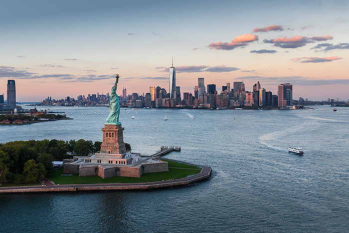
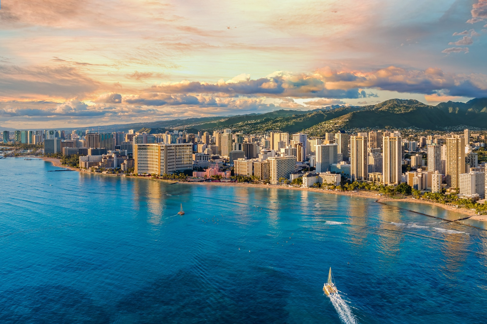
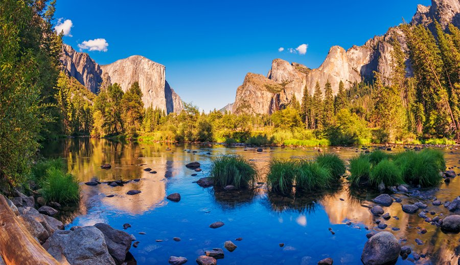

Daily Blogs:
Vacation Spots to Visit
Miami

Travel to this South Florida city to experience a melting pot of cultures. The vibrant food and nightlife scenes are worth the trip alone, so grab a frita (a Cuban-style hamburger) in Little Havana before dancing the night away in one of the city's countless clubs. If you're not a fan of clubbing, don't fret: Miami offers a variety of museums filled with exhibits about the city's unique art, history and culture; some visitor favorites include the Pérez Art Museum Miami and The Bass. Plus, the city sits close to the famous sands of Miami Beach.
Chicago

The Windy City's architecture, cuisine and museums make this Midwestern locale an excellent option for travelers with varying interests. Be sure to stuff your face at least once, whether it be with a Chicago-style hot dog (sans ketchup), an Italian beef sandwich or a slice of deep-dish pizza. Then, snap some pictures in front of Millennium Park's iconic "Bean" sculpture, check out the Art Institute of Chicago's top-notch collections or go on an architecture river cruise. If you plan on visiting in winter, pack your warmest attire and head to Maggie Daley Park to go ice skating
San Diego

San Diego appeals to many different kinds of vacationers. The city boasts a variety of activities, ranging from hiking in Torrey Pines State Natural Reserve – which sits just north of the city – to surfing at Mission and Pacific beaches. Foodies won't want to miss the city's central Gaslamp Quarter, which features a variety of bars and restaurants serving fresh seafood, authentic Mexican cuisine, craft beer and more. Other must-dos include wandering around museum-filled Balboa Park, taking a quick ferry ride to Coronado Island and watching the sun set in La Jolla
New York City

Known for its diverse cultural scene, the Big Apple boasts so many things to do that it puts most of its U.S. peers to shame. Whether you choose to spend the day perusing The Metropolitan Museum of Art's exhibits, catching a show on Broadway or trying the city's famous pizza, chances are you'll never find yourself feeling bored here. When you need some respite from the city's busy street life and soaring skyscrapers, retreat to scenic Central Park or the artsy High Line
Honolulu

Oahu features a nice balance of urban and beach environments. And with pleasant weather year-round, there really is no wrong time to visit this Hawaiian paradise. Waikiki Beach promises to please, but be forewarned: There's a good chance a barrage of tourists will greet you. For extra elbow room, head to more secluded options like Waimanalo Bay Beach Park and Kalama Park. Before leaving, carve out some time for visiting Honolulu naval sights like the Pearl Harbor National Memorial and the Battleship Missouri Memorial.
Yosemite

A vacation at Yosemite National Park in California is all about reconnecting with nature. Spend your visit checking out famous landmarks like Half Dome and Glacier Point or hiking Cathedral Lakes, the Mist Trail and other popular paths. You'll also want to save time to admire Yosemite's numerous waterfalls, including towering Yosemite Falls, which is one of the tallest waterfalls in the world. If you're not one for camping, opt for a daytrip from San Francisco, Sacramento or Lake Tahoe.